Satellite image time series
Má»—i sample chứa nhiá»u ảnh Sentinel-2 theo thá»i gian, 10 spectral bands và vector ngà y trong năm.
Demo báo cáo cho bà i toán phân Ä‘oạn nhãn cây trồng theo từng pixel từ chuá»—i ảnh Sentinel-2. Nhóm táºp trung và o PASTIS24, so sánh TSViT vá»›i UNet3D và hai biến thể ablation TViT/STViT.
Input là chuá»—i ảnh vệ tinh cùng má»™t khu vá»±c qua nhiá»u thá»i Ä‘iểm. Output là bản đồ nhãn cây trồng theo từng pixel. Äây là bà i toán khó vì cây trồng khác nhau có thể giống nhau ở má»™t thá»i Ä‘iểm, nhÆ°ng khác nhau theo diá»…n biến mùa vụ.
Má»—i sample chứa nhiá»u ảnh Sentinel-2 theo thá»i gian, 10 spectral bands và vector ngà y trong năm.
Mô hình dá»± Ä‘oán má»™t class crop-type cho từng pixel; class void được mask khá»i loss và metric.
Nhóm dùng PASTIS24, phiên bản chia nhỠtừ PASTIS thà nh các patch 24x24 để huấn luyện trên GPU Colab. Các mô hình dùng cùng fold protocol để so sánh công bằng.
Nh?m gi? TSViT full l?m m? h?nh ch?nh, UNet3D l?m baseline CNN, c?n TViT/STViT ?? ki?m ch?ng ??ng g?p c?a spatial modeling v? th? t? temporal-spatial. C?c h?nh TSViT b?n d??i l? ?nh ki?n tr?c nh?m d?ng ?? tr?nh b?y, kh?ng ph?i s? ?? placeholder.
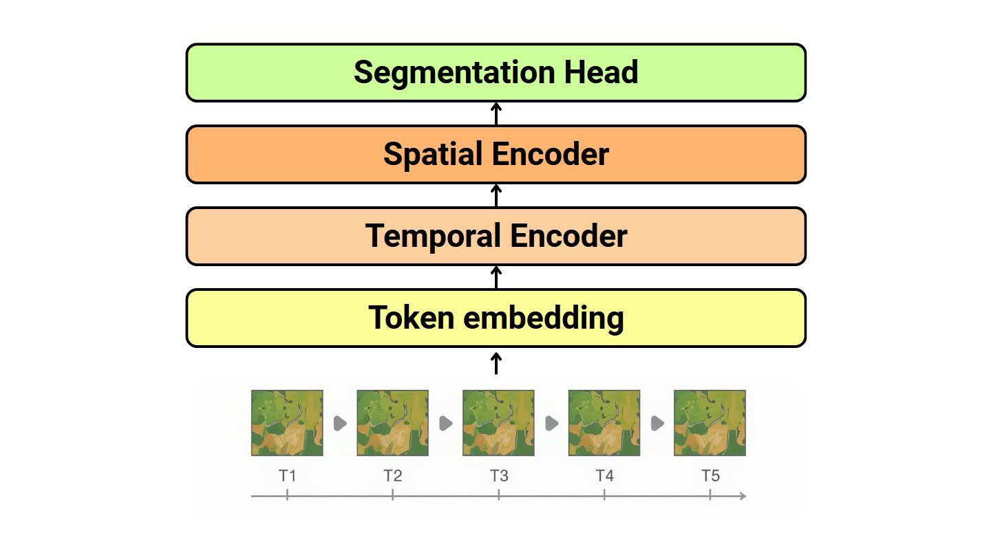
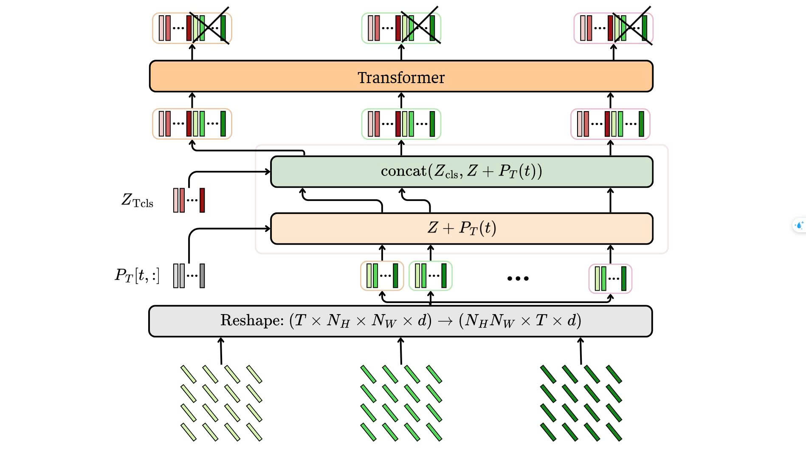
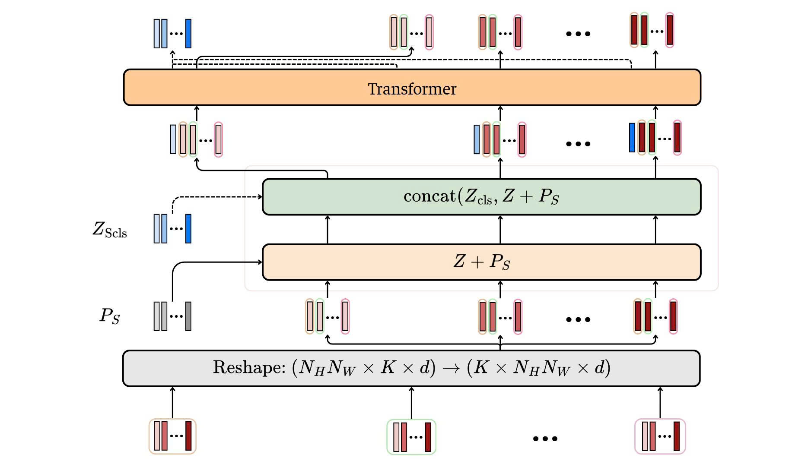
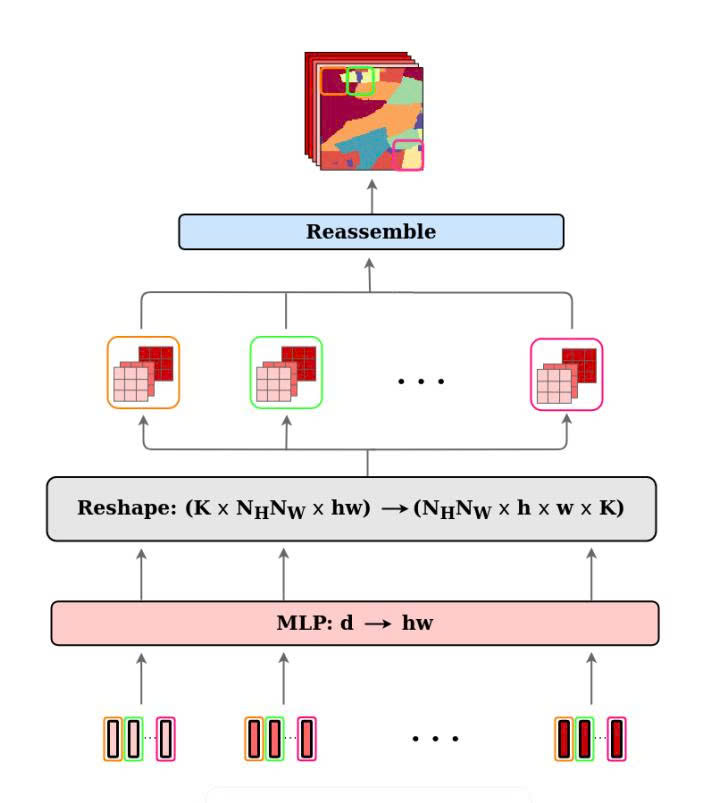
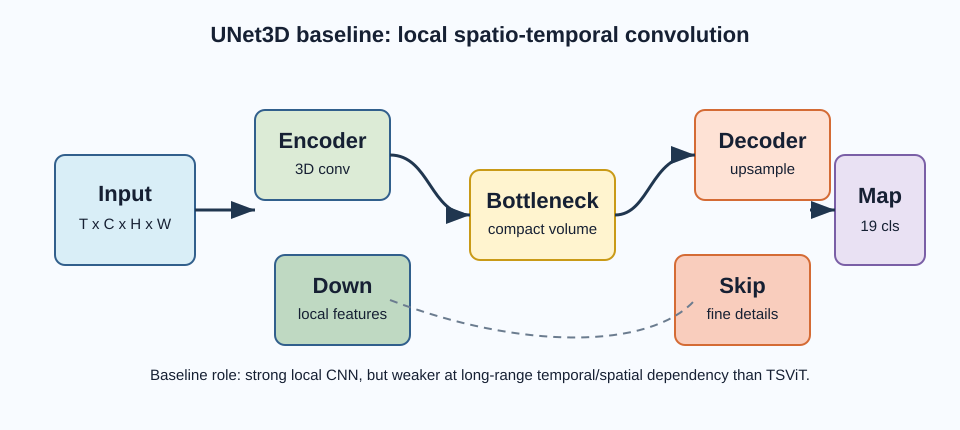
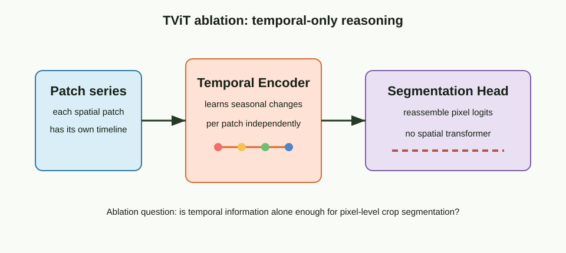
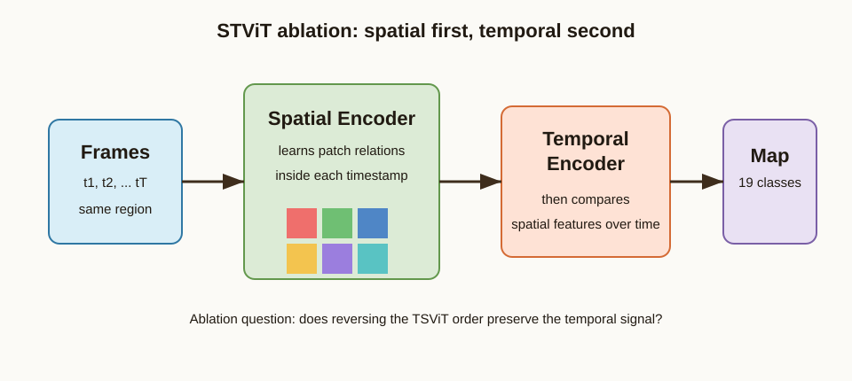
Metric chÃnh là mIoU và F1-macro vì dataset mất cân bằng lá»›p; OA được báo cáo nhÆ°ng không dùng là m kết luáºn duy nhất.
| Model | Loss | OA | mIoU | F1-macro | Precision | Recall | Params |
|---|---|---|---|---|---|---|---|
| TSViT | 0.6022 | 0.8271 | 0.6361 | 0.7623 | 0.7841 | 0.7465 | 1.657M |
| UNet3D | 0.6281 | 0.8011 | 0.5720 | 0.7045 | 0.7573 | 0.6711 | 6.177M |
| Model | Loss | OA | mIoU | F1-macro | Precision | Recall | Delta mIoU |
|---|---|---|---|---|---|---|---|
| TSViT full | 0.6022 | 0.8271 | 0.6361 | 0.7623 | 0.7841 | 0.7465 | 0.0000 |
| TViT, no spatial | 1.0591 | 0.6685 | 0.3713 | 0.5267 | 0.5654 | 0.5049 | -0.2648 |
| STViT, spatial-first | 0.7707 | 0.7939 | 0.5572 | 0.6921 | 0.7424 | 0.6660 | -0.0789 |
Phần nà y minh há»a cách Ä‘á»c prediction map: so sánh ground truth vá»›i output của các mô hình, các pixel sai được đánh dấu để thấy lá»—i ở biên và vùng nhá».
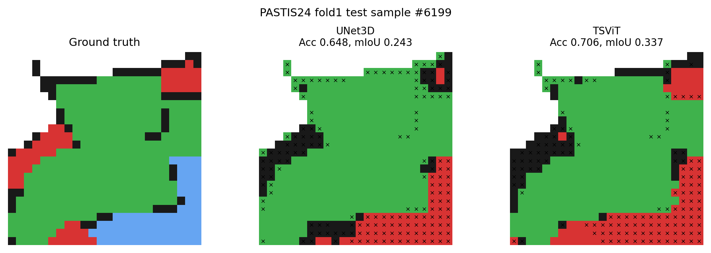
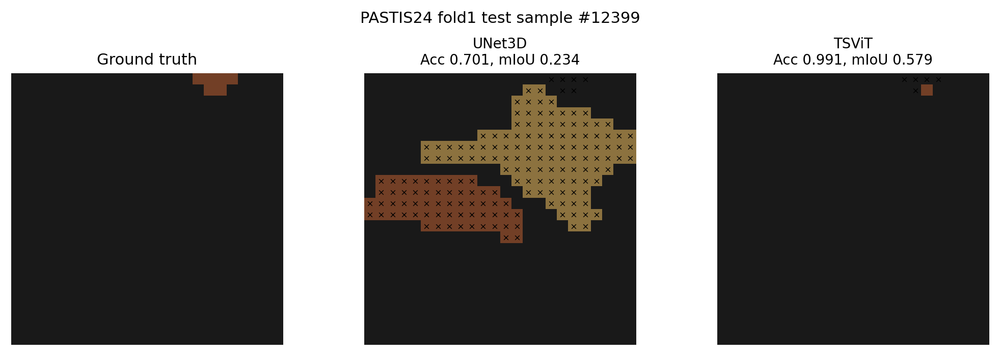
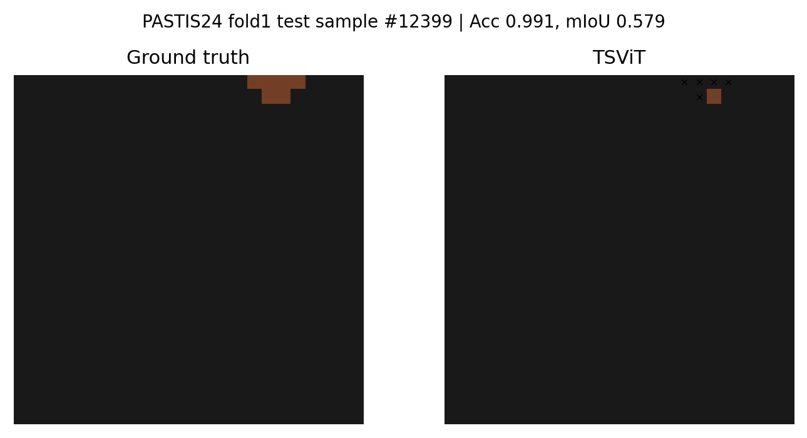
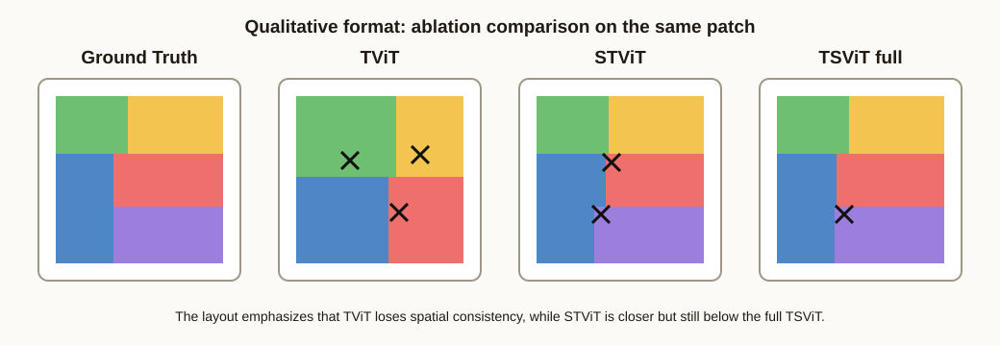
TSViT là lá»±a chá»n phù hợp cho crop-type semantic segmentation trên SITS: mô hình đạt kết quả tốt hÆ¡n UNet3D theo mIoU/F1, còn ablation cho thấy spatial modeling và thứ tá»± temporal-first là hai yếu tố quan trá»ng.
mIoU tăng 6.41 điểm phần trăm so với UNet3D.
TViT giảm mạnh nhất khi bỠspatial encoder.
STViT tốt hơn TViT nhưng vẫn thấp hơn TSViT full.
Ảnh GT/Pred/Error giúp giải thÃch lá»—i theo biên và vùng nhá».